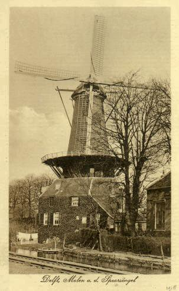

Delft: bestaande molens
In oude ansichten

 De Roos 1 |
 De Roos 2 |
 De Roos 3 |
 De Roos 4 |
 De Roos 5 |
 De Roos 6 |
 De Roos 7 |
 De Roos 8 |
 De Roos 9 |
 De Roos 10 |
 De Roos 11 |
 De Roos 12 |
 De Roos 13 |
 De Roos 14 |
 De Roos 15 |
 De Roos 16 |
 De Roos 17 |
 De Roos 18 |
 De Roos 19 |
 De Roos 20 |
 De Roos 21 |
 De Roos 22 |
 De Roos 1920 |
 De Roos voor 1960 |
|
 De Roos c.a.1916 |
De Roos c.a 1938 |
 De Roos c.a.1885 |
 De Roos. |
 De Roos 1940 |
 De Roos ca 1940 |
 Deze pagina is gemaakt op 25-12-2006: Tijd: 15:29 uur.
Deze pagina is gemaakt op 25-12-2006: Tijd: 15:29 uur.

Laatste wijziging:
4-12-2017
Met dank aan: de
Hollandsche molen/Rob Pols/Hans Klok/Gerard Barendse/
Erwin Esselink/Teun van der Sloot/Ton Pruissen voor het gebruik van de foto's